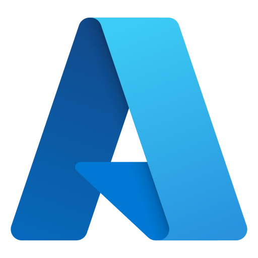
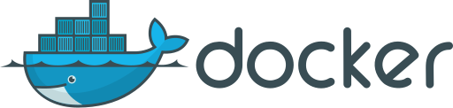
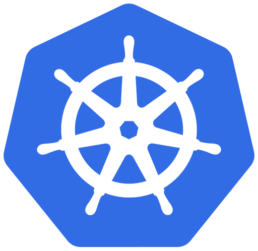

Azure Cloud & DevOps
Enterprise Azure cloud solutions, containerization, and automated deployment for mission-critical applications
 Microsoft Azure Deployment
15 years of Enterprise cloud platform expertise
Comprehensive experience with Microsoft Azure cloud services for enterprise application deployment. Skilled in Azure App Services, Azure Functions, Virtual Machines, and networking. Expert in implementing Infrastructure as Code (IaC) using ARM templates and Terraform for repeatable deployments.
Microsoft Azure Networking
15 Years of designing and securing cloud network architectures
Specialized expertise in Microsoft Azure networking services, delivering secure, scalable, and high-performance cloud connectivity for enterprise environments. Skilled in designing topologies, configuring Virtual Networks, Application Gateways, and load balancing. Strong background in network security controls including NSGs, ASGs, and Azure Firewall, with a focus on zero-trust architectures and compliance.
 Docker Containerization
10+ years of Application containerization and orchestration
Expert in Docker containerization for creating portable, consistent application deployments. Proficient in writing optimized Dockerfiles, multi-stage builds, container image management, and implementing containerized microservices architectures with proper networking and volume management.
 Azure Kubernetes Service (AKS)
10+ years of Container orchestration at scale
Advanced expertise in Azure Kubernetes Service for orchestrating containerized applications at enterprise scale. Skilled in cluster management, service mesh architecture, ingress controllers, and implementing CI/CD pipelines for Kubernetes deployments with proper monitoring and scaling strategies.